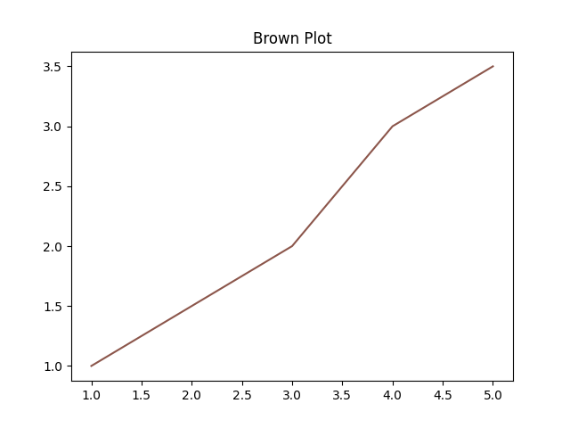

Another matplotlib example
Let's take another look at matplotlib. This one will be a little different in that we will generate direct bindings for a couple of matplotlib classes and module functions.
This example will also show you some of the current limitations of pyml_bindgen :)
Value specs
For this example, we won't bother binding all the arguments that these methods take since we won't be using them.
For each of these, I will put down the arguments as shown in the matplotlib docs, the follow it with the OCaml value spec we will use.
Axes.set_title
(docs)
Python:
Axes.set_title(label, fontdict=None, loc=None, pad=None, *, y=None, **kwargs)
OCaml:
val set_title : t -> label:string -> unit -> unit
Axes.plot
(docs)
Python:
Axes.plot(*args, scalex=True, scaley=True, data=None, **kwargs)
OCaml:
val plot : t -> x:float list -> y:float list -> ?color:string -> unit -> unit
This value spec will generate an Axes.plot function actually has a bug. If you check the docs, you can't actually pass x and y as keyword arguments. Oops! You have to go in and edit the binding by hand. Below, I will show a patch file with the changes you need to make.
You may be thinking, well, that's pretty annoying...I agree! For this function, I would probably just write it by hand from the start. I'm showing it here partly as a reminder that I want to change the behaviour of pyml_bindgen in a future release to handle methods like this one. But for now, you have to deal with it yourself :)
Note that while we used float list for x and y here, you may want to use float array instead.
Figure.savefig
(docs)
savefig(fname, *, transparent=None, **kwargs)
val savefig : t -> fname:string -> unit -> unit
Generating Axes & Figure modules
Let's go over the arguments and options for pyml_bindgen that we will need.
Note that we need to specify the correct Python module from which the Axes and Figure classes come.
- For
Axes, that'smatplotlib.axes. - For
Figure, that'smatplotlib.figure.
We use --caml-module option again to tell pyml_bindgen to generate the module signature as well as the implementation.
We use -a class to specify that we want to generate class-associated methods. Note that this is the default option.
For both invocations, we pipe the output directly to ocamlformat.
For now, pyml_bindgen always generates the filter_opt helper function. If you're generating multiple modules and concatenating them, you'll have to delete the function by hand or with grep or something. In our case, I use grep to remove the line from the Figure generating command. In later versions, you will be able to control this from the command line.
Run pyml_bindgen
Here are the commands.
pyml_bindgen axes_specs.txt matplotlib.axes Axes --caml-module Axes -a class \
| ocamlformat --enable-outside-detected-project --name=a.ml - \
> py_class.ml
printf "\n" >> py_class.ml
pyml_bindgen figure_specs.txt matplotlib.figure Figure --caml-module Figure -a class \
| grep -v 'let filter_opt' \
| ocamlformat --enable-outside-detected-project --name=a.ml - \
>> py_class.ml
Patch the file
Above, I mentioned that you would need to change the implementation for the Axes module a bit. Here is the patch for the lines you need to change.
Here is a patch showing the change I mean
--- py_class_bug.ml 2021-10-20 20:21:00.000000000 -0400
+++ py_class.ml 2021-10-20 20:21:00.000000000 -0400
@@ -30,17 +30,21 @@
let plot t ~x ~y ?color () =
let callable = Py.Object.find_attr_string t "plot" in
+ let args =
+ [|
+ Py.List.of_list_map Py.Float.of_float x;
+ Py.List.of_list_map Py.Float.of_float y;
+ |]
+ in
let kwargs =
filter_opt
[
- Some ("x", Py.List.of_list_map Py.Float.of_float x);
- Some ("y", Py.List.of_list_map Py.Float.of_float y);
(match color with
| Some color -> Some ("color", Py.String.of_string color)
| None -> None);
]
in
- ignore @@ Py.Callable.to_function_with_keywords callable [||] kwargs
+ ignore @@ Py.Callable.to_function_with_keywords callable args kwargs
end
module Figure : sig
Generated output
Here's the whole of the generated output including the patch.
let filter_opt l = List.filter_map Fun.id l
module Axes : sig
type t
val of_pyobject : Pytypes.pyobject -> t option
val to_pyobject : t -> Pytypes.pyobject
val set_title : t -> label:string -> unit -> unit
val plot : t -> x:float list -> y:float list -> ?color:string -> unit -> unit
end = struct
let import_module () = Py.Import.import_module "matplotlib.axes"
type t = Pytypes.pyobject
let is_instance pyo =
let py_class = Py.Module.get (import_module ()) "Axes" in
Py.Object.is_instance pyo py_class
let of_pyobject pyo = if is_instance pyo then Some pyo else None
let to_pyobject x = x
let set_title t ~label () =
let callable = Py.Object.find_attr_string t "set_title" in
let kwargs = filter_opt [ Some ("label", Py.String.of_string label) ] in
ignore @@ Py.Callable.to_function_with_keywords callable [||] kwargs
let plot t ~x ~y ?color () =
let callable = Py.Object.find_attr_string t "plot" in
let args =
[|
Py.List.of_list_map Py.Float.of_float x;
Py.List.of_list_map Py.Float.of_float y;
|]
in
let kwargs =
filter_opt
[
(match color with
| Some color -> Some ("color", Py.String.of_string color)
| None -> None);
]
in
ignore @@ Py.Callable.to_function_with_keywords callable args kwargs
end
module Figure : sig
type t
val of_pyobject : Pytypes.pyobject -> t option
val to_pyobject : t -> Pytypes.pyobject
val savefig : t -> fname:string -> unit -> unit
end = struct
let import_module () = Py.Import.import_module "matplotlib.figure"
type t = Pytypes.pyobject
let is_instance pyo =
let py_class = Py.Module.get (import_module ()) "Figure" in
Py.Object.is_instance pyo py_class
let of_pyobject pyo = if is_instance pyo then Some pyo else None
let to_pyobject x = x
let savefig t ~fname () =
let callable = Py.Object.find_attr_string t "savefig" in
let kwargs = filter_opt [ Some ("fname", Py.String.of_string fname) ] in
ignore @@ Py.Callable.to_function_with_keywords callable [||] kwargs
end
Write the Pyplot module
For a little variety, and because we don't need any of the extra stuff that pyml_bindgen generates (again, you will be able to control this eventually), let's write this one by hand.
Then you can make a pyplot.ml file
open Py_class
let import_module () = Py.Import.import_module "matplotlib.pyplot"
let subplots () =
let callable = Py.Module.get (import_module ()) "subplots" in
let args = [||] in
let kwargs = [] in
let tup = Py.Callable.to_function_with_keywords callable args kwargs in
let fig, ax = Py.Tuple.to_tuple2 tup in
match (Figure.of_pyobject fig, Axes.of_pyobject ax) with
| Some f, Some a -> Some (f, a)
| Some _, None | None, Some _ | None, None -> None
Note that there are more compact ways to write this with pyml, but we will leave it like this to keep it similar to the rest of the generated functions.
Set up the Dune project and run it
Now we need a dune file and a driver to run our plotting code. Save these two files in the same directory in as the other files.
dune
(executable
(name run)
(libraries pyml))
run.ml
open Py_class
let () = Py.initialize ()
let figure, axes =
match Pyplot.subplots () with
| Some (fig, ax) -> (fig, ax)
| None -> failwith "Failed to make figure and axes!"
let x = [ 1.; 2.; 3.; 4.; 5. ]
let y = [ 1.; 1.5; 2.; 3.; 3.5 ]
let () = Axes.set_title axes ~label:"Brown Plot" ()
let () = Axes.plot axes ~x ~y ~color:"tab:brown" ()
let () = Figure.savefig figure ~fname:"brown_plot.png" ()
Run it like so:
$ dune exec ./run.exe
If all goes well, you should see a nice, brown line plot:

Wrap up
In this tutorial, we generating bindings for a couple of matplotlib classes and functions. You saw how to combine multiple generated modules as well as some of the little workarounds you still have to do.
Like all the examples so far, we're only binding a couple of classes & functions. For such a small thing, feel free to write your bindings by hand. These two classes alone have tons of functions though, so if you were binding them all, that would be a pain to write by hand!